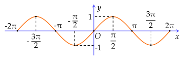

Câu 13. Hình họcCó vẽ hình
Phần II — Trắc nghiệm đúng hoặc sai
1 điểm
Trong mặt phẳng tọa độ $Oxy$ , cho đồ thị hàm số $y=\sin x$ trên đoạn $[ -2\pi ;2\pi ]$ như hình vẽ sau:

(Nhấp vào ô màu vàng để chọn đúng / sai)
Mỗi ý a), b), c)… là một phát biểu độc lập: nhấp vào ô để chọn Đúng/Sai,
0,25 điểm mỗi ý.
Câu 14. Đại số
Phần II — Trắc nghiệm đúng hoặc sai
1 điểm
Thống kê điểm giữa kì I môn Toán của $82$ học sinh khối $11$ tại một trường THPT được bảng số liệu ghép nhóm sau:
Điểm | Số học sinh
$[6,5;7)$ | $8$
$[7;7,5)$ | $10$
$[7,5;8)$ | $16$
$[8;8,5)$ | $24$
$[8,5;9)$ | $13$
$[9;9,5)$ | $7$
$[9,5;10)$ | $4$
(Nhấp vào ô màu vàng để chọn đúng / sai)
Mỗi ý a), b), c)… là một phát biểu độc lập: nhấp vào ô để chọn Đúng/Sai,
0,25 điểm mỗi ý.
Câu 15. Đại số
Phần III — Trắc nghiệm trả lời ngắn
0,5 điểm
Hằng ngày, mực nước của một con kênh lên xuống theo thủy triều. Độ sâu $h$ (m) của mực nước trong kênh đó tính theo thời gian $t$ giờ được cho bởi công thức $h=2\cos\Big(\dfrac{\pi t}{12}+\dfrac{\pi }{3} \Big)+12$ với $(0≤ t≤ 24 )$ . Độ sâu của mực nước trong con kênh đó đạt $14$ m lần đầu tiên trong ngày vào lúc mấy giờ?
Trả lời ngắn — gõ kết quả, kèm đơn vị nếu đề hỏi đơn vị.
Câu 16. Đại số
Phần III — Trắc nghiệm trả lời ngắn
0,5 điểm
Cho hàm số $f(x )=\left\{ \begin{aligned}&\dfrac{x^2 - 4}{x-2} & \text {khi} \,\, x≠ 2 \\&3~m & \text {khi} \,\,x=2 \\\end{aligned} \right.$ với $m$ là tham số. Để hàm số $f(x )$ liên tục tại điểm $x_0=2$ thì giá trị của $m$ bằng bao nhiêu? (Kết quả làm tròn đến chữ số thập phân thứ hai).
Trả lời ngắn — gõ kết quả, kèm đơn vị nếu đề hỏi đơn vị.
Câu 17. Hình họcKhông vẽ hình
Phần III — Trắc nghiệm trả lời ngắn
0,5 điểm
Cho góc $\alpha$ thỏa mãn $\cos \alpha =\dfrac{-1}{2}$ . Giá trị của $\tan^2 2\alpha$ bằng bao nhiêu?
Trả lời ngắn — gõ kết quả, kèm đơn vị nếu đề hỏi đơn vị.
Câu 18. Hình họcKhông vẽ hình
Phần III — Trắc nghiệm trả lời ngắn
0,5 điểm
Cho hình chóp $S.ABCD$ có đáy $ABCD$ là hình thang với $AB//CD$ và $AB>CD$ . Biết $AB=5a,\,CD=3a$ . Gọi $E$ là điểm thuộc cạnh $SB$ sao cho đường thẳng $CE$ song song với mặt phẳng $(SAD )$ . Biết tỉ số $\dfrac{ES}{EB}=\dfrac{m}{n}$ với $\dfrac{m}{n}$ là phân số tối giản $(m,\,n∈ ℕ^× )$ . Giá trị của biểu thức $2~m+3n$ bằng bao nhiêu?
Trả lời ngắn — gõ kết quả, kèm đơn vị nếu đề hỏi đơn vị.
Câu 19. Đại số
Phần IV — Tự luận
1 điểm
Tính $\underset{x→ 0}{\mathop{\lim }}\,\dfrac{(x+3)^2 - 9}{x}$ .
Bài làm của bạn:
Câu 20. Hình họcKhông vẽ hình
Phần IV — Tự luận
1 điểm
Cho hình chóp tam giác $S.ABC$ . Gọi hai điểm $M,\,N$ lần lượt thuộc các cạnh $SA,\,SC$ sao cho $SM=\dfrac{2}{3}SA,\,SN=\dfrac{2}{3}SC$ .
a) Chứng minh rằng đường thẳng $MN$ song song với mặt phẳng $(ABC )$ .
b) Gọi $P$ là trung điểm của cạnh $BC$ . Tìm giao điểm của đường thẳng $AB$ với mặt phẳng $(MNP )$ .
Bài làm của bạn:
Câu 21. Đại số
Phần IV — Tự luận
1 điểm
Năm 2018 anh Minh tốt nghiệp trường Đại Học Bách Khoa Hà Nội. Vừa ra trường anh Minh đã được nhận vào làm việc tại một công ty Điện Tử ở Hà Nội. Tháng đầu tiên đi làm, anh Minh được công ty trả lương $5$ triệu đồng, nhờ chăm chỉ làm việc và hoàn thành tốt các công việc được giao nên cứ mỗi tháng sau công ty đó lại tăng $5\%$ lương so với tháng trước. Mỗi khi lĩnh lương anh Minh đều cất đi phần lương tăng so với tháng trước để tiết kiệm, phần lương còn lại anh Minh dùng cho chi phí sinh hoạt. Hỏi sau $5$ năm (tính từ thời điểm bắt đầu làm việc tại công ty) thì anh Minh tiết kiệm được bao nhiêu triệu đồng (kết quả làm tròn đến chữ số hàng đơn vị)?
Bài làm của bạn: